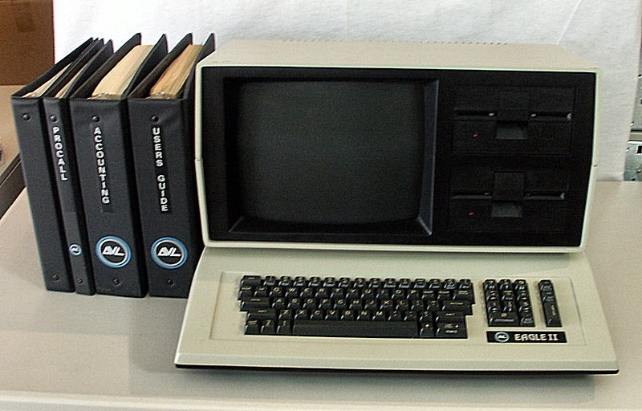

The Show You Performed Into a Room
Before PowerPoint, a presentation was a live performance: the 1980 AVL Eagle let a programmer sit with headphones on, listening to a soundtrack and pressing keys in time, so that thirty slide projectors would later replay the performance to a lecture hall. The output of that computer was not a document. It was a darkened room.

There is a machine in this museum whose output was not a screen and not a sheet of paper. Its output was a darkened lecture hall: up to thirty Kodak Ektagraphic projectors aimed at one wide screen, cross-fading still photographs until the stills seemed to move. Audiences called it multi-image — spectacle at a scale that a room-sized slide studio like the Genigraphics 100 worked one frame at a time.
The AVL Eagle, from 1980, was the first multi-image controller that was not a dedicated box: a general-purpose Z80A computer running CP/M, with one extra board bolted inside and one exact purpose. You could have used it for word processing. Nobody did.
The man with the headphones
Here is the part with no twin anywhere else in the collection. Programming a show meant sitting at the keyboard with headphones on, playing the soundtrack, and pressing keys in time: Advance, Alt, Cut, Dissolve, Freeze, Wait, Loop. Each keypress recorded a moment, a projector, and a lamp behaviour into a timed cue list. A show could take hours, or weeks. The programmer was performing the show into memory — playing the room before the room existed.
Every other authoring interface here has the author editing a representation of the finished thing: a drawing, a document, a score. The Eagle's authoring surface holds no picture of the result at all. The programmer hears the soundtrack the audience will hear, feels where the image should change, and the machine stores the gesture. The artwork is a set of keypresses bearing timestamps, and its truth arrives only later, at full scale, in the dark.
That makes multi-image the collection's purest perform-it-to-store-it interface — the inverse of every tool that asks you to arrange the finished artifact and then plays it back. Here you play it first and arrange nothing.
Thirty machines that have to agree
Commands left the computer as two telemetry streams called PosiTrak, over ordinary RCA or XLR cables — sound wiring, because that is what the room already had. Each stream fed up to five outboard boxes called Doves, each steering three projectors. One Eagle could drive thirty Ektagraphics, five 16mm projectors, and twenty auxiliary points: room lights, tape rewind, strobes.
Each command is a physical verb on real machinery. Forward and Reverse lift a slide out of the tray, rotate it, and drop the next one in behind a shutter, taking a second or more. Alt advances nothing and toggles only lamp state — how two projectors alternate fast enough to fool the eye. Dissolve is a fade you time yourself, one to thirty-two seconds. None of it is a redraw. All of it is objects moving in a room, with tolerances.
And thirty projectors had to agree on a geometry no software enforced. Every tray reserved slot 80 for an identical alignment-grid slide; before programming began, each projector was registered to that grid. The coordinate system was photographic media and convention — a protocol for making a roomful of independent machines agree, carried by one slide.
The standard that lost
The timed cue list chased ClockTrak, a biphase timecode read from the control channel of a multitrack tape deck. It did roughly what SMPTE timecode did and was deliberately, profitably incompatible with it. Then shows started to include video, and video people lived in SMPTE. The programmers switched, and the proprietary stripe lost.
That reads like a tale about open standards, but it is more physical than that. The tape was the interface, and the tape became the wrong dialect — keep ClockTrak and you keep a rig nothing else in the venue speaks.
What the room replaced
The personal computer finished it — the same thing that ended the Aesthedes. Slides became a file, the file became a beamer, and a beamer needs no alignment protocol, no timecode, and nobody performing a room into memory in a dark studio.
Part of me wants to write that as a loss: the person who could hold thirty projectors in their hands does not exist any more. But one comparison checks the nostalgia. The Strand Light Palette also replaced a physical wall with a command surface, and the profession survived, because the desk was a tool to a designer who still sat at it. In multi-image, the performance was the profession, and it retired with the hardware.
A photograph from the 1987 Ford New Car Announcement Show in Detroit puts it in one frame: programming stations in the foreground, producers, art directors and the programmer behind them. The note to leave with is the one the machine would leave — cue list ready, lamps warm, audience about to walk in.